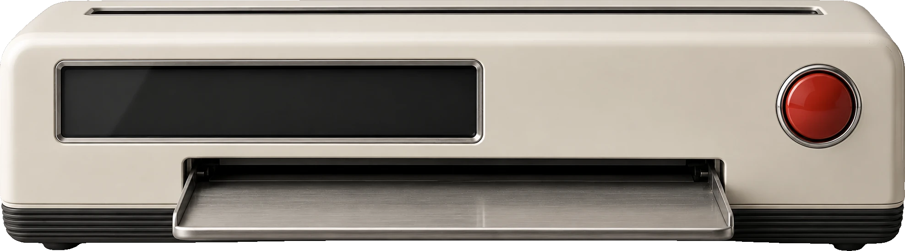

Chongbo Ningvisual and motion review · printer v3 · Italian
Printed to order
意大利那台，动起来
这是 GPT 的探索图直接抠出来用的，还不是定稿渲染。屏幕文字、绿色玻璃、按键行程、读取光和纸都是代码叠上去的。写一句话或者直接按红键，打印中再按一次可以停下。

Chongbo Ning
Design engineer
Accessibility · Motion
Picked from my case files.
为什么是这台，接下来做什么
- 选它
- 奶油色机身和网站的暖灰背景、纸张是一个世界；又低又宽（约 3.6 : 1），首屏好放，纸能更宽；黑色罗纹底座在深色模式下也站得住。
- 借日式
- 屏幕玻璃带一点绿；定稿渲染时按键圈改成细滚花。
- 定稿要改的
- 托盘短一点：现在托盘伸出太多，像个抽屉；吐出的纸应该是主角。
- 按键稍大，离屏幕近一点，右边留白少一些。
- 顶面多露一点，让顶缝和进纸看得清。
- 透明背景、最大尺寸、屏幕完全关闭。
- AI 分析
-
- 读：纸带着请求穿过顶缝的绿光，机器认出的词在纸上被标出来。
- 等：回答还没来时，屏幕快速翻过项目名。点"慢速网络"可以试这一段。
- 懂：屏幕把认出的能力一个个锁上。
- 找：数字从全部 41 张卡滚到符合的张数，再到选中的张数（正式版用真实数字）。
- 印：前口一格一格吐纸，纸被拿起，落到纸张条里。
- 文案提案
- 屏幕上的新文字：Ready、Press print、Searching 41 cards、9 cards match、Choosing four、Printed: four sheets、From two projects、Stopped、Your request is back。